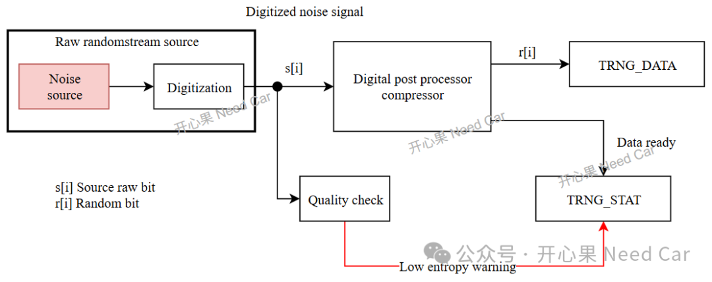

把早期rand()/srand()的讨论视为历史实现案例。随机数“看起来均匀”或通过统计测试，不足以证明它适合生成密钥或安全挑战。
NIST SP 800-22开心果 Need Car · 2026-03-24T06:22:00+08:00 · 微信原文
充当密钥、充当盐值（salt，用于防止重放攻）、填充字节（Padding bytes）等场景。
那么，随机数又是如何产生呢？随机数的产生可以通过如下几种方式：
（一）真随机数生成器（TRNG, True Random Number Generator）
物理世界的“不可预测现象”，例如：热噪声、环境噪声。真随机数的生成过程如下所示：

（二）伪随机（PRNG, Pseudo-Random Number Generator）
通过算法生成的“看起来随机”的数，例如：密码学 PRNG（如：CTR-DRBG）。
Note：DRBG（Deterministic Random Bit Generator，确定性bit生成器）。
（三）密码学安全伪随机数（CSPRNG）
对于密码学安全伪随机数生成的随机数，输入种子必须是高熵（一般来自 TRNG）,算法必须抗预测、抗状态恢复攻击，例如：SHA256-DRBG。
Note：CSPRNG（Cryptographically Secure Pseudo-Random Number Generator，密码学安全伪随机数生成器）。
对于随机数的生成，需要注意以下几点：
软件不要使用 rand()生成熵
不要将时间戳作为种子
TRNG 输出未经 DPP (Digital Post‑Processing)不能直接用于密钥
......
为了进一步理解问题，我们需要先搞清楚：熵（Entropy）是什么？熵就是“随机性的量度”。熵越高 → 越随机 → 越难预测 → 越安全，单位通常是 比特（bit）。
既然熵可以用bit度量，又该如何理解每个字符熵≥7.5bits？工程实际中，我们常常用香农熵（Shannon Entropy）衡量不确定性/随机性。对于一个随机变量X，可能取值为X1, X2, …，对应概率P1, P2, …，香农熵定义为：
举例：假如，某MCU的随机数只会输出 0~3 四个数，每个概率一样，这四种可能可以用 2 bit（00、01、10、11）来描述，熵 = log₂(4) = 2 bit，说明该随机源最大有效输出2 bit 的随机性。
无论你用多少 bit 来存储这个输出（例如：用一个 8-bit 字节表示 0～3），其本质熵仍然只有 2 bit。换句话说：存储一个值所用的位宽（8 bit）与熵源实际提供的随机性（2 bit）不是同一个概念。
延伸思考：在随机数评估中，单个字节的理论最大熵始终是 8 bit，因为一个字节有 256 种可能，log₂(256) = 8。然而，如果随机源只输出 16 字节数据，我们并不能从这么小的样本中验证出其熵是否接近 8 bit。样本数量限制了我们能观察到的“统计熵”，例如：16 个样本中最多只能区分16个不同的字节值，因此观测到的熵不会超过log₂(16) = 4 bit。但这并不表示字节的最大熵只有 4 bit，而只是说明样本量不足以证明更高的熵。工程上要求“每字节熵 ≥ 7.5 bit”，本质上是在要求熵源本身的输出分布接近均匀，从而保证字节的实际熵接近其理论上限。要验证熵源是否达标，必须通过大量样本进行统计估计，而不是依靠单次或少量输出。因此，“每字节熵 ≥ 7.5 bit”实际上是对熵源质量的要求，而不是对某段短样本的描述。
熵衡量随机性，而不是字节数量。“熵”本质上是对“熵源（Entropy Source）”的描述，而不是对某一个具体输出字节片段的描述。我们不能说：“这个8字节的输出是高熵的” ❌（不正确）。应该说：“这个熵源能产生64bit 的熵输出” ✅（正确）。为什么呢？因为熵需要统计大量输出样本才能推断概率分布。
单个样本，如：8字节的0x01、0x01、0x01、0x01、0x01、0x01、0x01、0x01无法体现熵源的熵。
往期精彩回顾